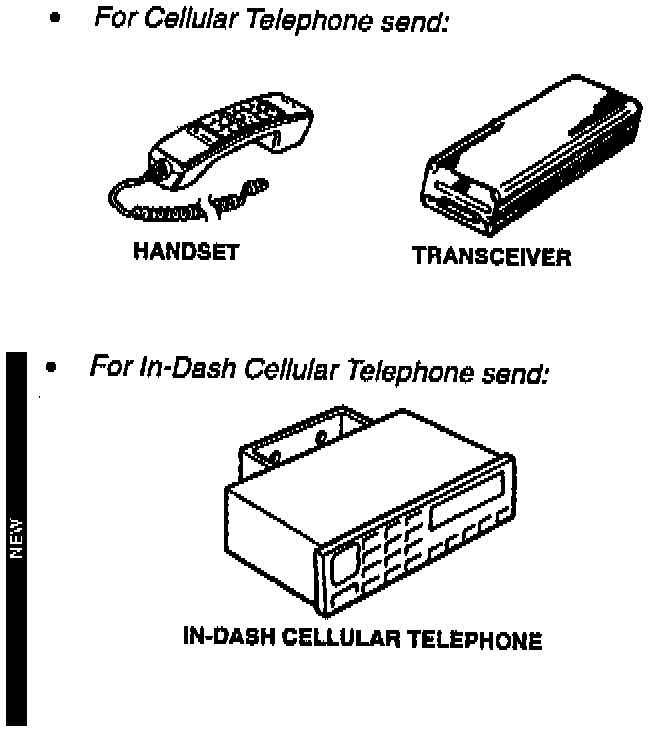
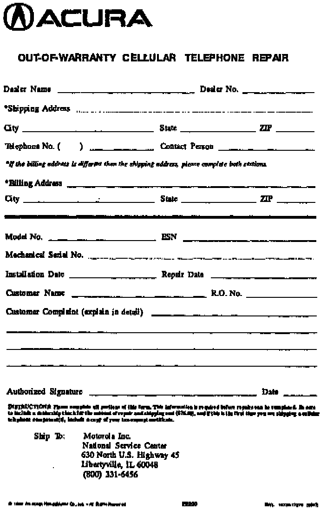

Cellular Telephone Out-of-Warranty Repair
August 1, 1995BULLETIN NO.
94-012
YEAR
1991
AND
LATER
MODEL
INTEGRA
VIGOR
LEGEND
NSX
VIN APPLICATION
ALL WITH
OPTIONAL
CELLULAR TELEPHONE
Out-of-Warranty Cellular Telephone Repair (Supersedes 94-012, dated September 20, 1994)
This bulletin provides information for the repair of Acura cellular telephones (including in-dash cellular telephones) that are no longer in warranty. You deal directly with Motorola, the manufacturer, for the repair of the cellular telephone, and only Acura cellular telephones are subject to this program.
PROCEDURE
The following components are what Motorola will remanufacture in this program. Send in only the failed component(s) for the type of cellular telephone being repaired.

NOTE:
Some cellular telephone components such as handsets (for the in-dash cellular telephones), hands-free microphones, antennas, etc. that fail are considered non-repairable, and you should order a replacement component to repair the cellular telephone.
Once you have verified a customer's complaint of a malfunctioning cellular telephone, remove the defective cellular telephone from the vehicle. Pack the component(s) carefully, include the proper paperwork, and ship it to the Motorola Service Center (see SHIPPING PROCEDURE).
The cellular telephone component(s) will be repaired or exchanged by Motorola, and shipped back within 10 calendar days of its receipt by Motorola. The repair is guaranteed by the service center for 90 days from the date of repair.
Motorola will log and track all cellular telephone component(s) by mechanical serial number. You may inquire about the status of a unit that is in for repair by calling Motorola at (800) 331-6456.
Should you or your customer experience any problems with this program, please contact your zone customer relations office.
SHIPPING PROCEDURE
1. Complete an Out-of-Warranty Cellular Telephone Repair form (E2200), and ship it with the defective cellular telephone component(s).
2. Include a dealership check for the repair and return shipping cost of $76.50 (no personal checks).
NOTE:
Include a copy of your tax-exempt certificate the first time you ship a cellular telephone component(s) to Motorola. They will keep it on file for verification of future shipments.
3. Pack the component(s) carefully so they will not be damaged during shipping.
4. Ship the package to this address:
Motorola Inc.
National Service Center
630 North U.S. Highway 45
Libertyville, IL 60048
Once Motorola has repaired the cellular telephone component(s), it will be shipped back to you via Federal Express Next Day service. Included will be a packing list that details the repairs performed.

^ Cellular telephone component(s) sent without an Out-of-Warranty Cellular Telephone Repair form, or with incomplete information, will be held until proper information is received.
^ Cellular telephone component(s) sent without a check will be returned without repair.
TELEPHONES RECEIVED DAMAGED
Cellular telephone component(s) that are damaged, either during shipping or by misuse, cannot be
^ Repaired or exchanged for the fixed price listed under SHIPPING PROCEDURE.
^ Shipped back to you within the normal 10-day turnaround time.
Motorola will inspect the damage, and you will be given an estimate of any additional charges.
If you approve the estimate, mail a check for the additional charges to the Service Center. If you do not approve the estimate, the cellular telephone component(s) will be returned to you. Motorola will issue you a refund check at the end of the current month.